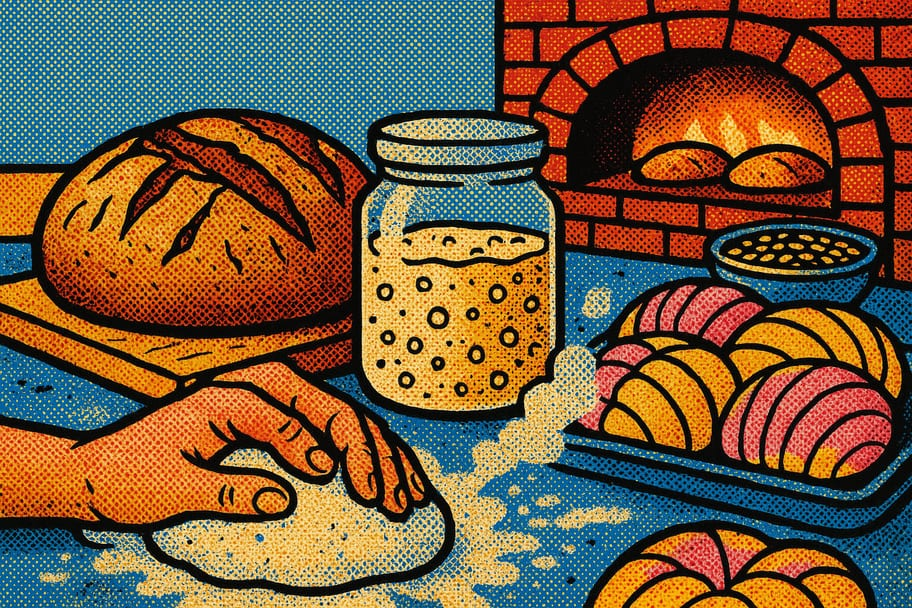

Recetario de panes y masa madre

La masa madre es un cultivo vivo de harina y agua donde habitan levaduras y bacterias silvestres. Con ella se hace pan sin levadura comercial, más digerible y de sabor profundo. Aquí aprendes a criar tu fermento y a usarlo en un pan rústico y en un pan dulce.
🌾 1. Iniciador de masa madre
- ☐ Harina de trigo integral y harina blanca
- ☐ Agua sin cloro a temperatura ambiente
- ☐ Un frasco limpio y una tela
- 1Día 1
Mezcla 50 g de harina integral con 50 g de agua en el frasco. Cubre con la tela y deja a temperatura ambiente.
- 2Días 2 a 5: alimentar
Cada día tira la mitad y agrega 50 g de harina y 50 g de agua. Mezcla bien. Verás burbujas y olerás un aroma ácido y afrutado.
- 3Listo
Cuando duplique su volumen unas horas después de alimentarlo, está activo. Guárdalo en el refri y aliméntalo una vez por semana.
🍞 2. Pan rústico de masa madre
- ☐ 500 g de harina de trigo
- ☐ 350 g de agua
- ☐ 100 g de masa madre activa
- ☐ 10 g de sal
- 1Mezclar y reposar
Mezcla harina y agua y deja reposar 30 min (autólisis). Luego incorpora la masa madre y la sal.
- 2Plegar
Durante 3 horas, cada 30 min estira y pliega la masa dentro del bowl. Ganará fuerza y elasticidad.
- 3Fermentar en frío
Forma una bola, ponla en un bowl enharinado y refrigera de 8 a 16 horas. Desarrolla sabor y se maneja mejor.
- 4Hornear
Hornea en olla tapada a 230 °C 20 min, destapa y hornea otros 20–25 min hasta dorar. Deja enfriar antes de cortar.
🍩 3. Pan dulce con masa madre
- ☐ 500 g de harina
- ☐ 120 g de masa madre activa
- ☐ 2 huevos, 80 g de azúcar, 60 g de mantequilla
- ☐ 150 ml de leche y una pizca de sal
- 1Amasar
Mezcla todos los ingredientes y amasa 10 min hasta una masa suave y elástica. Agrega la mantequilla al final.
- 2Fermentar
Deja levar tapada hasta que casi duplique (4–6 h según el clima, o toda la noche en frío).
- 3Formar y hornear
Forma panecillos, deja levar 2 h más, barniza con huevo y hornea a 180 °C unos 20 min hasta dorar.
💡 Consejos de panadería
- Usa siempre la masa madre en su punto más alto de actividad, cuando está burbujeante.
- El frío del refri es tu aliado: ralentiza la fermentación y mejora el sabor.
- No tires la masa madre que descartas: úsala para hot cakes o galletas.
¿Te sirvió este recetario?
Compártelo en tu comunidad y explora más recursos en Guardianes del Pulque.
← Más recetarios 💚 Donar